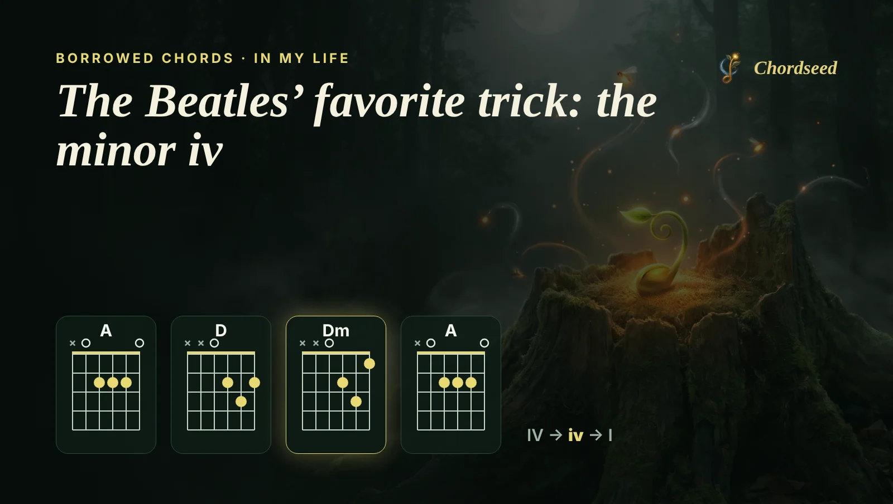

Acordes prestados: el truco favorito de los Beatles
Hay canciones con un acorde que te detiene y te hace sentir algo. Muchas veces es un acorde “prestado” de fuera de la tonalidad, y los Beatles eran maestros en ponerlo justo donde duele (en el buen sentido).

¿Qué es un acorde prestado?
Cada tonalidad mayor tiene una gemela: la tonalidad menor que empieza en la misma nota. Do mayor (C) y Do menor (Cm) comparten la misma casa, pero la menor tiene notas más oscuras (E♭, A♭ y B♭). Un acorde prestado es un acorde que tomas de esa gemela oscura y lo pones en tu canción mayor y alegre.
El resultado es un momento de sombra, nostalgia o fuerza sin salir de casa. También se le llama intercambio modal, pero no necesitas saber el nombre para usarlo.
Los cuatro acordes prestados que vale la pena conocer
| Acorde | En C | En G | Cómo se siente |
|---|---|---|---|
| iv menor | Fm | Cm | Agridulce, nostálgico. Un nudo en la garganta. |
| ♭VII | B♭ | F | Grande, abierto, un poco rebelde. Rock puro. |
| ♭VI | A♭ | E♭ | Épico y de película, como el sol saliendo entre nubes. |
| ♭III | E♭ | B♭ | Audaz y luminoso, un cambio repentino de luz. |
Cómo los usaron los Beatles
El iv menor en “In My Life”
En las estrofas (tonalidad de A), la armonía va a D, el acorde IV normal, y luego lo convierte en Re menor (Dm) antes de volver a A. Ese cambio de una sola nota, de F♯ a F, es lo que le da a la canción su tristeza suave por el pasado.
El ♭VII en el final de “Hey Jude”
El largo final para cantar en coro (tonalidad de F) repite un ciclo con E♭, un acorde que no está en Fa mayor. Hace que el final se sienta enorme y colectivo, como un estadio cantando junto.
El ♭III y el ♭VII en “Here Comes the Sun”
En el puente (tonalidad de A), George Harrison pasa por C y G, dos acordes prestados de La menor, antes de llegar a D y A. Se siente como nubes que pasan antes de que vuelva la luz.
Cómo usarlos en tus canciones
- iv menor justo antes de volver a casa. Toca el IV, luego el mismo acorde en menor y después el I. Funciona en casi cualquier balada:
C – F – Fm – C. - ♭VII – IV – I para un gran final. Perfecto para el último coro o un cierre para cantar todos:
G – F – C – Gen tonalidad de G. - ♭VI – ♭VII – I para una llegada épica. El movimiento de “el héroe gana”:
A♭ – B♭ – C. - De uno en uno. Un acorde prestado es una especia. Úsalo una vez por sección y vuelve a la familia normal para que la sorpresa no pierda fuerza.
La mejor prueba es tu oído: toca tu progresión con y sin el acorde prestado, y quédate con la versión que te pone la piel de gallina.
Pruébalo en Chordseed
Activa Sorpresa en el generador de acordes y Chordseed te sugiere acordes prestados que encajan con tu progresión, te dice de qué tonalidad vienen y los toca para que escuches el cambio. Gratis, en tu navegador.
Abrir la app →